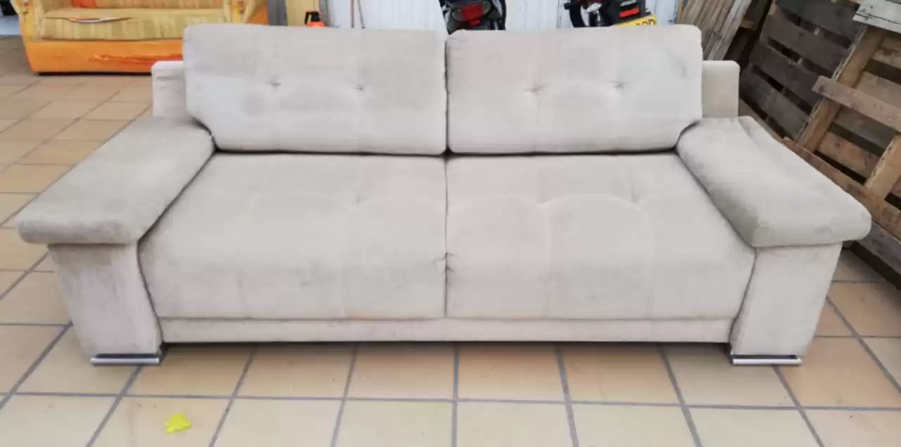
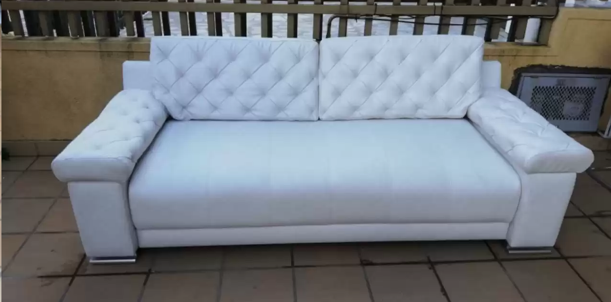
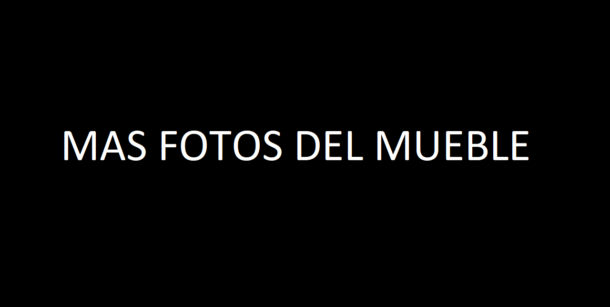

Restauracion 1
Sofa familiar renovado


Trabajo Realizado
Se cambio la tela exterior, se reemplazo la espuma de los asientos, se ajusto la estructura interna y se reforzaron brazos y respaldo para mejorar la comodidad y la duracion del mueble.
